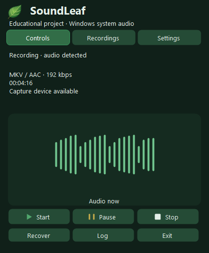

System audio
Record audio from apps, browsers, music and calls played through Windows.
Record Windows system audio
locally, with controls in the tray.
Capture the default Windows output device. Record, pause and save from a compact panel. Microphone capture is not supported.


Record audio from apps, browsers, music and calls played through Windows.
Recordings stay on your computer. A WAV backup helps preserve audio if encoding fails.
Completed recordings show their format, size and known duration. Open a file or its folder from the panel.
MKV/AAC, OGG/Opus, MP3, M4A/AAC, AAC/ADTS and an explicit WAV-only mode.


The library loads in the background with newest recordings first. Completed files show size, format and available duration information.
SoundLeaf’s supported formats. Change the format and save folder only while recording is stopped.
After stopping, SoundLeaf checks the result before marking it complete.
A PCM/WAV backup is maintained during recording. The final file becomes available only after encoding, verification by decoding and a duration check.
SoundLeaf can detect unfinished sessions and rebuild them from verified WAV parts. Originals are archived only after successful recovery.
Offline Setup without administrator rights. FFmpeg is included. The application is unsigned.
An educational project for Windows 11 x64. Installation does not start recording. Launching the app starts recording automatically after checks. Respect content rights and obtain any required participant consent.